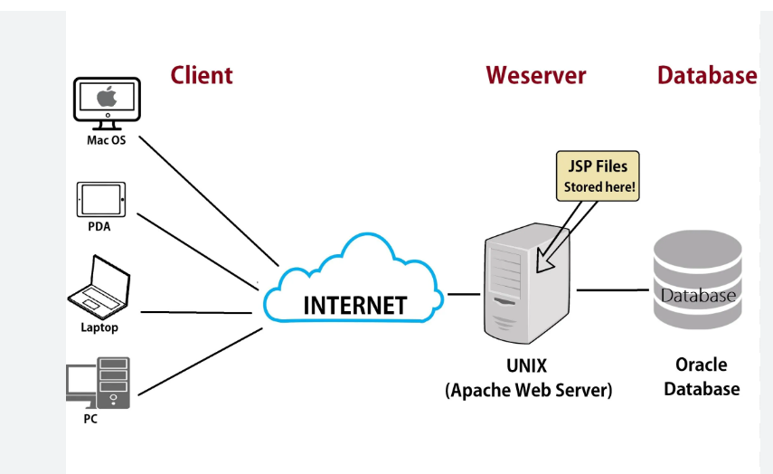

<!DOCTYPE html>
<html lang="en"></html>
<head>
    <meta charset="UTF-8">
    <meta name="viewport" content="width=device-width, initial-scale=1.0">
    <nav>
        <a href="index.html">Home</a>&#65372;
        <a href="www.html">World Wide Web</a>&#65372;
        <a href="tcpip.html">TCP/IP</a>&#65372;
        <a href="http.html">HTTP</a>&#65372;
        <a href="dns.html">DNS</a>&#65372;
        <a href="html.html">HTML</a>&#65372;
        <a href="webserver.html">Web Server</a>&#65372;
        <a href="webbrowser.html">Web Browser</a>&#65372;
        <a href="url.html">Uniform Resource Locator</a>&#65372;
        <a href="intranet.html">Intranet</a>&#65372;
        <a href="extranet.html">Extranet</a>&#65372;
        <a href="ftp.html">File Transfer Protocol</a>&#65372;
        <a href="web1.0.html">Web 1.0</a>&#65372;
        <a href="web2.0.html">Web 2.0</a>&#65372;
        <a href="web3.0.html">Web 3.0</a>&#65372;
        <a href="web4.0.html">Web 4.0</a>&#65372;

    </nav>
    <title>Terminology:Web Server</title>
        <style>
    body {
            
            background-color: #fff5f7;
            margin: 0;
            padding: 20px;
        }
        h1{
            color: #c2185b;
            font-size: 30px;
            text-transform: uppercase;
        }
        h2{
            color: #f48fb1;
            font-size: 22px;
            text-transform: uppercase;
            text-decoration: underline;

        }
        p{
            color: #333;
            font-size: 18px;
            background-color: beige;
            line-height: 1.6;
            font-style: italic;
            padding: 10px;
        }
        ul{
            color: #333;
            font-size: 18px;
            line-height: 1.6;
            font-style: italic;
            padding: 10px;
        }
</style>
</head>
<body>
    <h1>Web Server</h1>
    <p>
        A web server is a software application that serves web pages to users over the internet. It is responsible for processing incoming requests from clients (such as web browsers) and delivering the requested web content, such as HTML files, images, and other resources. Web servers use the HTTP protocol to communicate with clients and can handle multiple requests simultaneously.
    </p>
    <p>
        Web servers play a crucial role in hosting websites and enabling users to access online content. They can be configured to support various features, such as security, caching, and load balancing, to ensure efficient and reliable delivery of web content to users around the world.
    </p>
    
    <h2>How Web Servers Work</h2>
    <p>
        When a user types a URL into a web browser, the browser sends an HTTP request to the web server hosting the website. The web server processes the request, retrieves the requested web page or resource from its storage, and sends back an HTTP response to the browser. The browser then renders the web page for the user to view and interact with. Web servers can also handle dynamic content by executing server-side scripts or applications to generate web pages on-the-fly based on user input or other factors.
    </p>
    <h2>Types of Web Servers</h2>
    <ul>
        <li><strong>Apache HTTP Server:</strong> One of the most popular and widely used web servers, known for its flexibility and extensive features.</li>
        <li><strong>Nginx:</strong> A high-performance web server that is often used for serving static content and as a reverse proxy server.</li>
        <li><strong>Microsoft Internet Information Services (IIS):</strong> A web server developed by Microsoft, commonly used in Windows environments.</li>
        <li><strong>LiteSpeed Web Server:</strong> A commercial web server known for its speed and efficiency, often used for hosting high-traffic websites.</li>
    </ul>
    <h2>Importance of Web Servers</h2>
    <p>
        Web servers are essential for the functioning of the World Wide Web, as they enable users to access and interact with web content. They provide the infrastructure for hosting websites, delivering web applications, and supporting online services. Without web servers, we would not be able to browse the internet, access online resources, or engage in e-commerce and other online activities that have become integral to modern life.
    </p>
</body>
</html>
<h2>Example</h2>
<p>
    An example of a web server is the Apache HTTP Server, which is widely used to host websites and deliver web content to users around the world.
</p>
<h2>Conclusion</h2>
<p>
    In conclusion, web servers are a fundamental component of the internet infrastructure, enabling users to access and interact with web content. They play a crucial role in hosting websites, delivering web applications, and supporting online services that have become essential to our daily lives.
</p>
